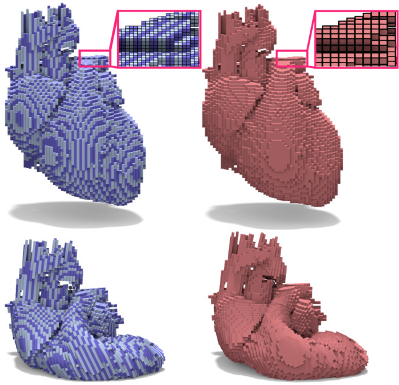
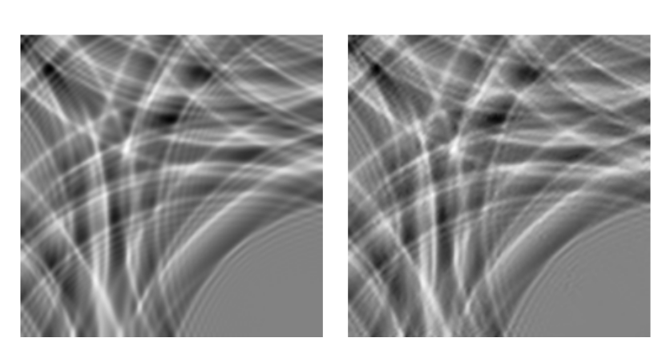

Publications


Shallow Water Equation Simulation’s Super-resolution Using GAN
Advisor: Jin Huang
Master Thesis at Zhejiang University (in Chinese), 2019
I currently work as a research assistant for Prof. Jin Huang on Computer Graphics in Zhejiang University and a R&D intern at Xmov(Shanghai) advised by Prof. Jinxiang Chai. Before I came to ZJU, I received my B.Eng. degree from Department of Computer Science and Technology in Sichuan University, Chengdu, China. My research interest includes (a).physically based simulation by numerical PDE solving, (b).using numerical optimization for inverse physical or geometric design and (c).image-based modeling system for human digitization. I have some experience in solid and fluid simulation, geometry processing, deep learning and image based hair modeling.
Advisor: Jin Huang
Master Thesis at Zhejiang University (in Chinese), 2019
Advisor: Jinxiang Chai